Hi! I'm a graduate student in Computer Engineering at NYU, where I work as a Research Assistant at the EMERGE Lab, advised by Professor Eugene Vinitsky, on reinforcement learning for autonomous driving. Before NYU, I spent close to a year as a Software Development Engineer at Mercedes-Benz R&D, and interned at C3.ai and American Express. I graduated from IIT Bombay with a degree in Mechanical Engineering and a minor in Computer Science, where I did undergraduate research in optimization, controls, and computational biology under several professors.
Outside of work, I enjoy music and lifting.
Research
My research interests span reinforcement learning, autonomous driving, optimization, and applied machine learning systems.
Current Research
- Working on PPO-based, LSTM-augmented self-play algorithms to learn robust and generalizable driving policies
- Contributing to the development of PufferDrive, a driving simulator, adding features and scaling execution over 200k SPS
- Core member for the development and public release of PufferDrive 2.0, a scalable autonomous driving simulator
Recent Internship
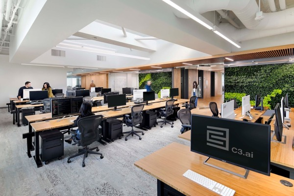
- Built a template layer for C3 Code, developing skills and context for zero-shot agentic app generation
- Designed generalizable optimization workflows spanning MILP, convex, and nonlinear problem formulations
- Architected self-improving iteration loops that robustly benchmarked generated applications against test cases
Education
Coursework: Machine Learning, Computer Vision, Reinforcement Learning, Image Processing, High Performance Machine Learning
Coursework: Data Structures & Algorithms, Linear Algebra, Discrete Mathematics, Statistics, Stochastic Processes
Past Experience
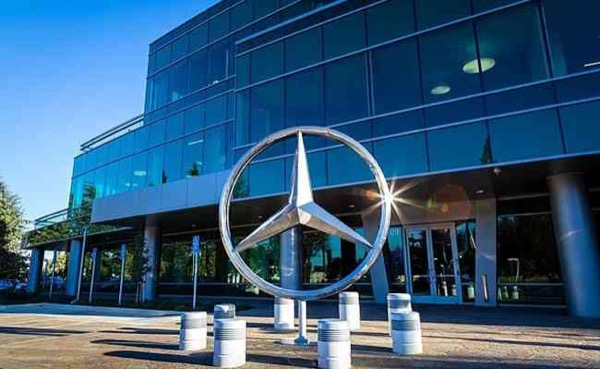
- Managed the Mercedes Connected Cars platform with 100+ remote commands and 10+ Java services on Kubernetes
- Built a RAG-powered Mistral-7B AWS platform with automated CI/CD workflows, reducing overhead by 50%
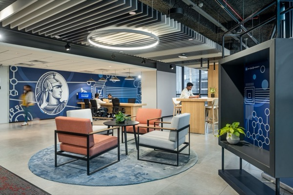
- Built an OLS-based hyperparameter tuning framework for Market Mix Modeling using Dual Annealing and Bayesian optimization
- Improved performance across 12 KPIs by 150% and increased convergence stability by 35% with a C-curve strategy
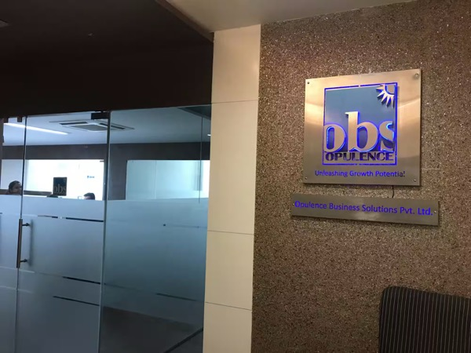
Conducted research and synthesized data to provide strategic insights and recommendations for a diverse range of clients, advising investors on funding opportunities for startups and MSMEs while facilitating business relationships between enterprises and global investors.
Research Projects
- Designed a white-box distillation pipeline to compress Swin Transformers (197M to 28M parameters) using ImageNet-1k
- Applied post-training quantization and LoRA fine-tuning for monocular depth estimation, surpassing Intel's benchmark model
- Built a 7-zone Capacity Expansion Model in Gurobi for renewable energy and policy planning, and REC market elasticity analysis
- Scaled optimization to 100+ zones using a decentralized ADMM-based distributed optimization framework
- Developed a neural speech decoder by implementing a Swin Transformer architecture over input ECoG signals
- Implemented a contrastive-learning-based self-supervised pretraining pipeline for efficient spatio-temporal alignment
Prior Research & Projects
Built a knowledgebase of 20,000+ human proteins using a novel Partition Ensemble Classifier (XGBoost + Random Forest) analyzing 183 biophysical and sequence-specific properties. The website offers druggability predictions and access to 2M+ publications on drug targets. Authored a research paper accepted in the peer-reviewed journal Briefings in Bioinformatics (Oxford Academic).
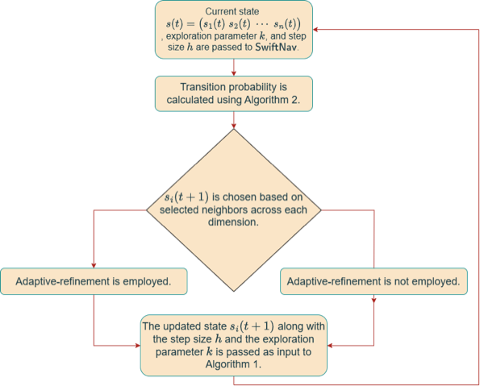
Designed a novel global optimization algorithm based on probabilistic Markov-chain Monte Carlo (Walker-Slice / Gibbs) sampling, scaling to 1,000+ dimensions with dynamic grid refinement and parallel processing, achieving up to 10× faster convergence in high dimensions.
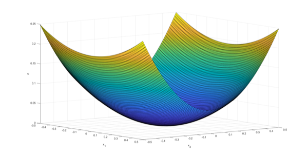
Used a computationally tractable algorithm (MSA), coupled with SwiftNav, to algorithmically construct CLFs — a centerpiece of control engineering with applications spanning spacecraft attitude control, epidemic mitigation, catalyst control, and biochemical reactions. Polynomial and trigonometric candidate functions were validated against the specified constraints.
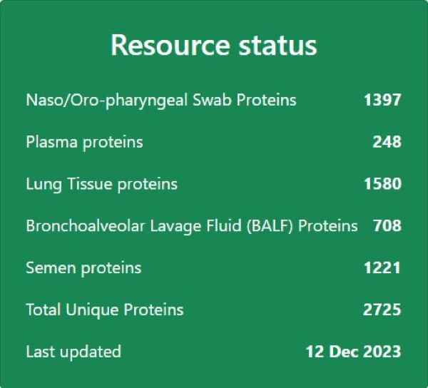
Part of the team that developed a comprehensive resource bank hosting proteomics data of SARS-CoV-2 infected patients to facilitate COVID-19 research, studying protein variation across organs. The website provides substantial coverage of host-related proteomics data of SARS-CoV-2.
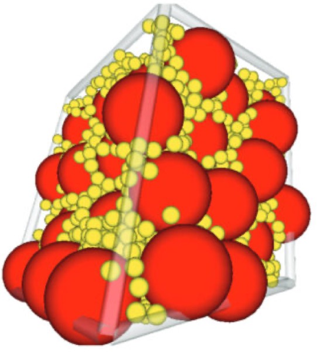
Researched mathematical models formulating spheres as d-dimensional lattices to maximize packing density, examining the Monte-Carlo approach alongside the TJ and Lubachevsky-Stillinger algorithms — a problem of interest in cryptosystems and computational mathematics.
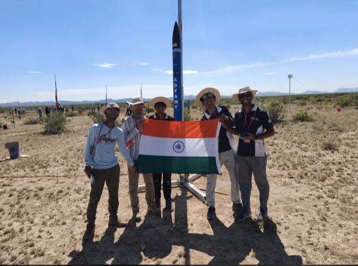
Design engineer in the airframe subsystem of a student team building sounding rockets (10k ft). Ideated, conceptualized, and manufactured GFRP and carbon-fibre rocket parts, running flight-performance simulations in ANSYS and SolidWorks. Selected as part of IITB Rocket Team's first contingent representing India at the Spaceport America Cup 2023 (NM, USA); our rocket, Adyant, achieved nominal liftoff, chute ejection, and recovery, placing 1st nationally and 66th internationally out of 150+ teams.
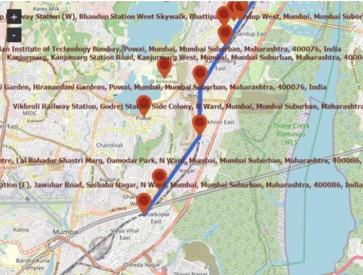
Optimized multi-modal travel across the city of Mumbai (metro, local trains, buses, rickshaws) for user-chosen objectives (time, cost, comfort) using linear programming for the deterministic case, a Reinforcement Learning / MDP reformulation for the stochastic case, and the NSGA-II genetic algorithm for the optimal route problem.
Implemented Meta's Segment Anything Model, modified with a LoRA loss function (SAMed), for medical image segmentation. Trained on the CHAOS dataset of CT-scan-based 3D DICOM images with custom preprocessing routines, obtaining solid results for liver, kidney (left/right), and spleen segmentation.
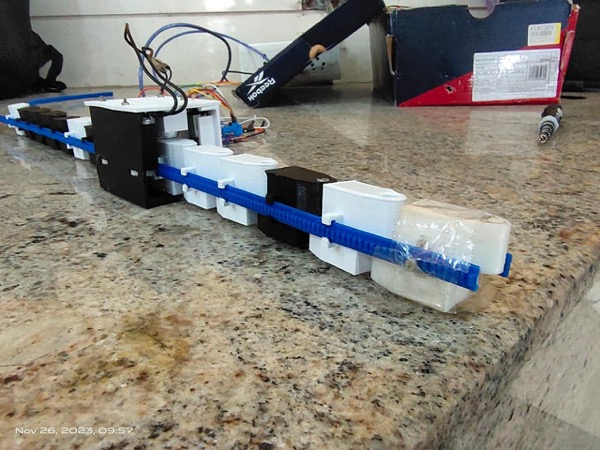
Built a near-continuum soft robotic arm able to bend at various radii of curvature along its length for maintenance, healthcare, and search-and-rescue use cases, with a Wi-Fi-based wireless remote for control.